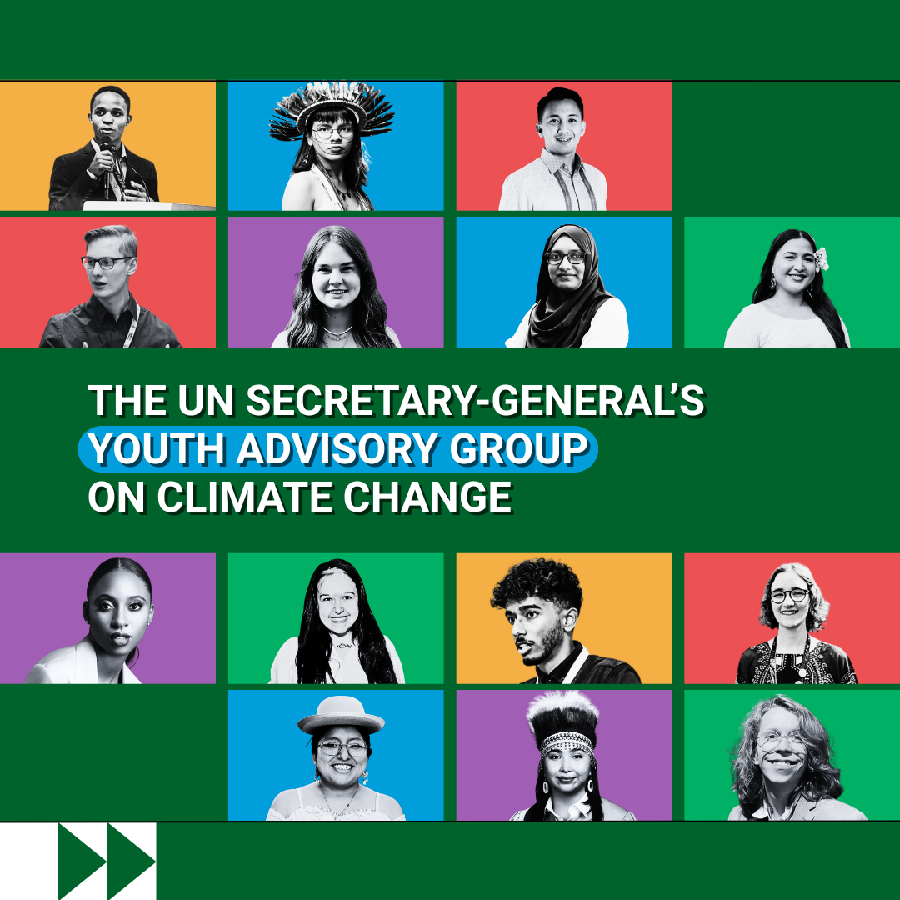
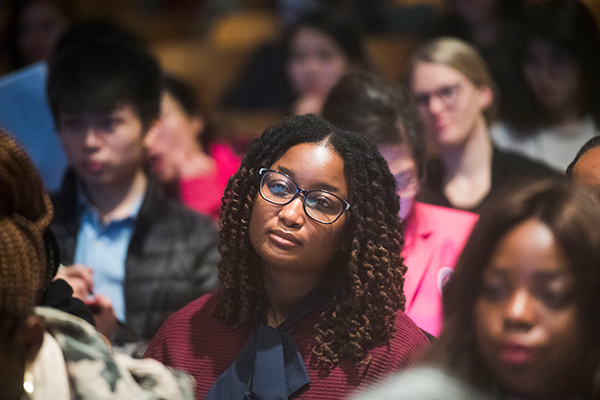

Local youth actions are not isolated activities; they are integral to broader efforts to achieve national development plans and the Sustainable Development Goals (SDGs).
Photo:© Dardan Rushiti/ UNDP Kosovo
ON SOURCE: UNITED NATIONS INTERNATIONAL YOUTH DAY
Youth Localizing the SDGs
The theme of International Youth Day (IYD) 2025, Local Youth Actions for the SDGs and Beyond, highlights the unique role of youth in translating global ambitions into community-driven realities. As development partners work to translate and implement the global goals within specific local contexts, aligning them with community needs while maintaining consistency with national and international commitments, young people are critical partners. They bring creativity, insight, and deep community ties that help bridge the gap between policy and practice. With over 65 per cent of SDG targets linked to local governance, youth engagement is not a luxury—it is a necessity.
This year’s IYD will also underscore the essential role of local and regional governments. Being the closest to the communities they serve, they are uniquely positioned to create inclusive policy environments, allocate resources, and establish mechanisms for youth participation in local planning and decision-making. By integrating youth priorities into local and regional strategies and fostering partnerships with youth organizations, authorities can collaborate with young people to transform their ideas into impactful solutions. When local governments provide spaces for innovation, mentorship, and civic engagement, they not only accelerate SDG implementation but also nurture future community leaders and changemakers.
This year’s IYD takes on added significance as it coincides with the upcoming 30th anniversary of the World Programme of Action for Youth. It remains a guiding framework for recognizing youth as key actors in sustainable development and participatory governance—principles directly echoed in this year’s theme. Discussions related to the 2025 IYD theme will also inform preparations for the Second World Summit for Social Development to be held in Doha in November.
As the world embarks on the final stretch toward 2030, IYD 2025 calls for real investments in inclusive policies and programmes that leverage local youth actions for the SDGs.

The Youth Advisory Group on Climate Change
On International Youth Day, 12 August 2025, the Secretary-General announced the 14 young leaders appointed to the third cohort of his Youth Advisory Group on Climate Change who will bring their expertise and recommendations to guide the UN's effort on climate action. Learn more about these inspiring young climate leaders here.
Did you know?
- Half of the people on our planet are 30 or younger, and this is expected to reach 57% by the end of 2030.
- Survey shows that 67% of people believe in a better future, with 15 to 17 year-olds being the most optimistic about this.
- By 2050, the people who are under 25 today will compose more than 90% of the prime-age workforce.
- 13% of the young labour force is unemployed. This number from 2023 marks the lowest rate in 15 years.
Official Commemoration

The global observance of International Youth Day 2025 will take place on 12 August in Nairobi, Kenya, in collaboration with the UN-Habitat. The event will bring together youth leaders, municipal officials, policymakers, UN representatives, and development practitioners to exchange ideas and showcase solutions for strengthening youth engagement in local development.
ON SOURCE: UNITED NATIONS INTERNATIONAL YOUTH DAY